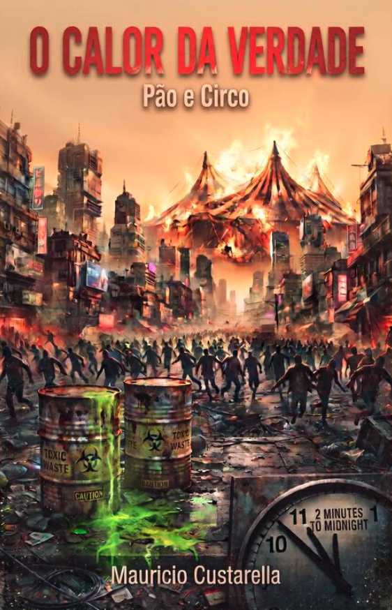
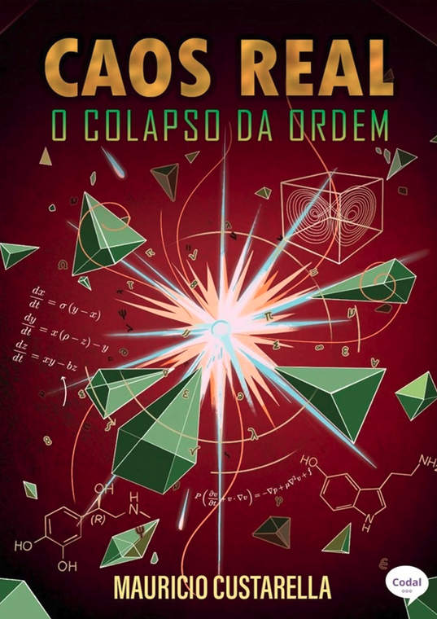
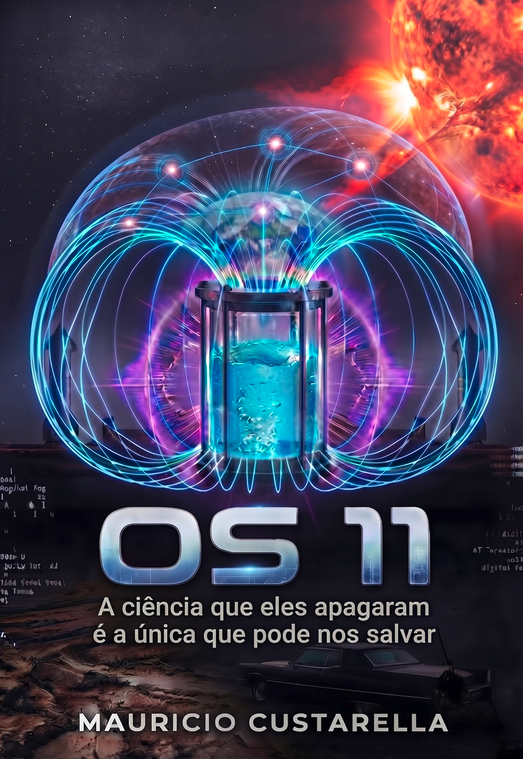
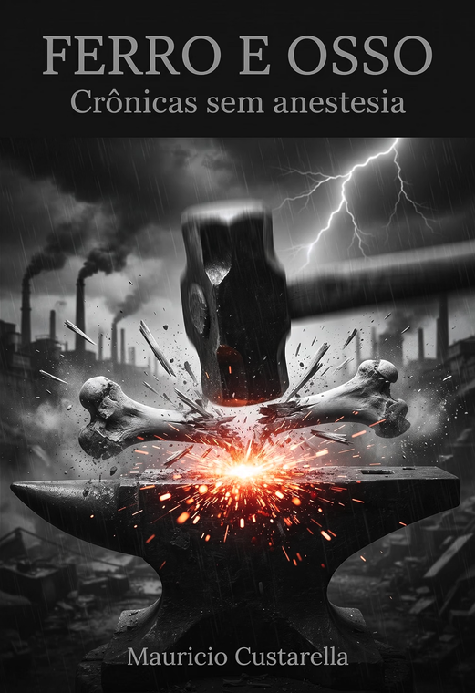
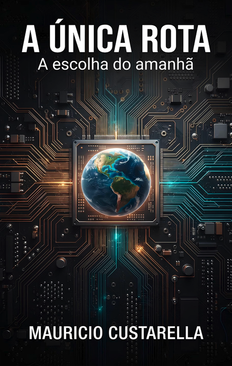
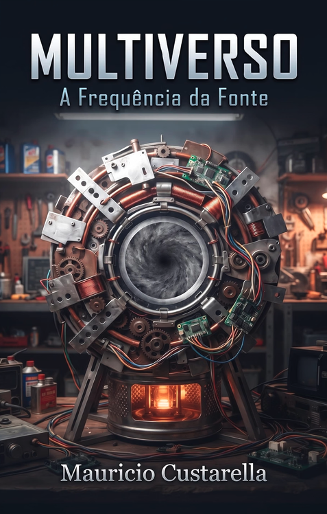
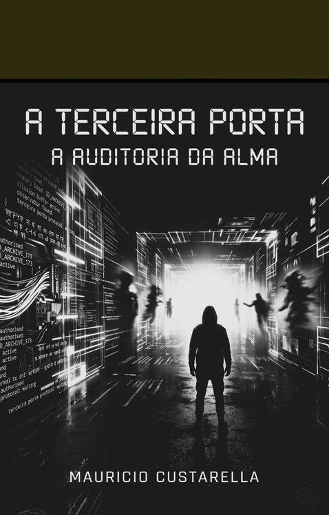
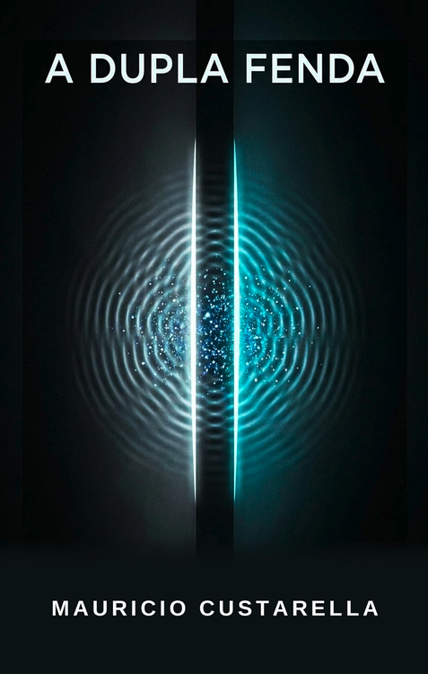
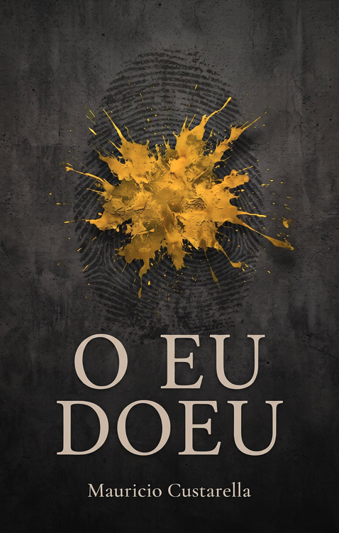
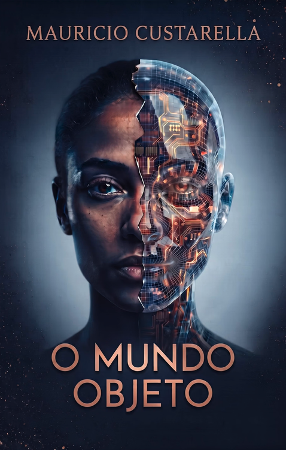

Hard Science Fiction Author, Philosophical Essayist & Consciousness Researcher. Escritor de Hard Science Fiction, Ensaísta Filosófico e Pesquisador da Consciência.
With over four decades dedicated to complex aviation and critical systems management, Mauricio Custarella's work unites rigorous operational discipline with deep philosophical speculation.
Com mais de quatro décadas dedicadas à aviação complexa e à gestão de sistemas críticos, o trabalho de Mauricio Custarella une a rigorosa disciplina operacional à especulação filosófica profunda.
His works explore the limits of reality, control architectures, the cybernetics of consciousness, and ego sovereignty through immersive hard sci-fi narratives and independent essays published on Amazon KDP and UICLAP.
Suas obras exploram os limites da realidade, arquiteturas de controle, a cibernética da consciência e a soberania do ego através de narrativas imersivas de hard sci-fi e ensaios independentes publicados na Amazon KDP e UICLAP.

Reflections on truth, reality, and human essence.
Reflexões profundas sobre a verdade, a realidade e a essência humana.



Unfiltered chronicles on reality, pragmatism, and human nature.
Crônicas sem anestesia sobre a realidade e pragmatismo.






The poet's truths facing urban haste and collective patterns.
As verdades do poeta diante da pressa urbana.